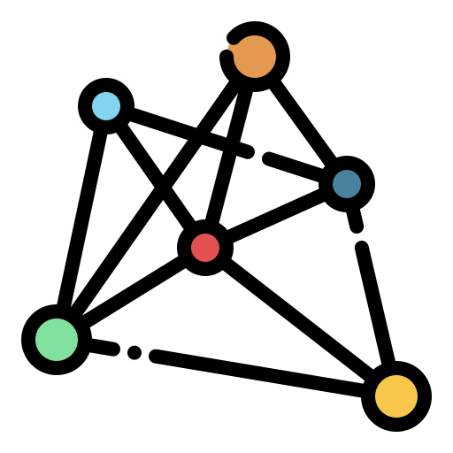

I'm Melih Agraz.
a datascientist



I am an Assistant Professor in the Department of Statistics at Giresun University, specializing in health data analysis through machine learning techniques. My academic journey includes a Bachelor of Science from the Faculty of Law, which enhances my multidisciplinary approach to research. My primary research interests are in biostatistics, bioinformatics and computational statistics focusing on innovative ways to leverage data to enhance health outcomes. Additionally, with my background in law, I offer expert support in your legal decision-making processes in Turkiye.
Ben Giresun Üniversitesi İstatistik Bölümünde Yardımcı Doçent olarak görev yapmakta, sağlık verilerinin analizinde makine öğrenimi teknikleri üzerine uzmanlaşmış bulunmaktayım. Akademik yolculuğum, araştırmalarıma çok disiplinli bir yaklaşım kazandıran Hukuk Fakültesi'nden Lisans derecesi ile devam etmektedir. Ana araştırma ilgi alanlarım biyoistatistik, biyoenformatik ve verileri sağlık sonuçlarını iyileştirecek yenilikçi yollarla kullanmaya odaklanan hesaplamalı istatistiklerdir. Ayrıca, hukuk alanındaki geçmişimle, Türkiye'deki hukuki karar verme süreçlerinizde uzman desteği sunmaktayım.
| R Programming Language | ⭐⭐⭐⭐⭐ |
| Python | ⭐⭐⭐⭐ |
| HTML & CSS | ⭐⭐ |